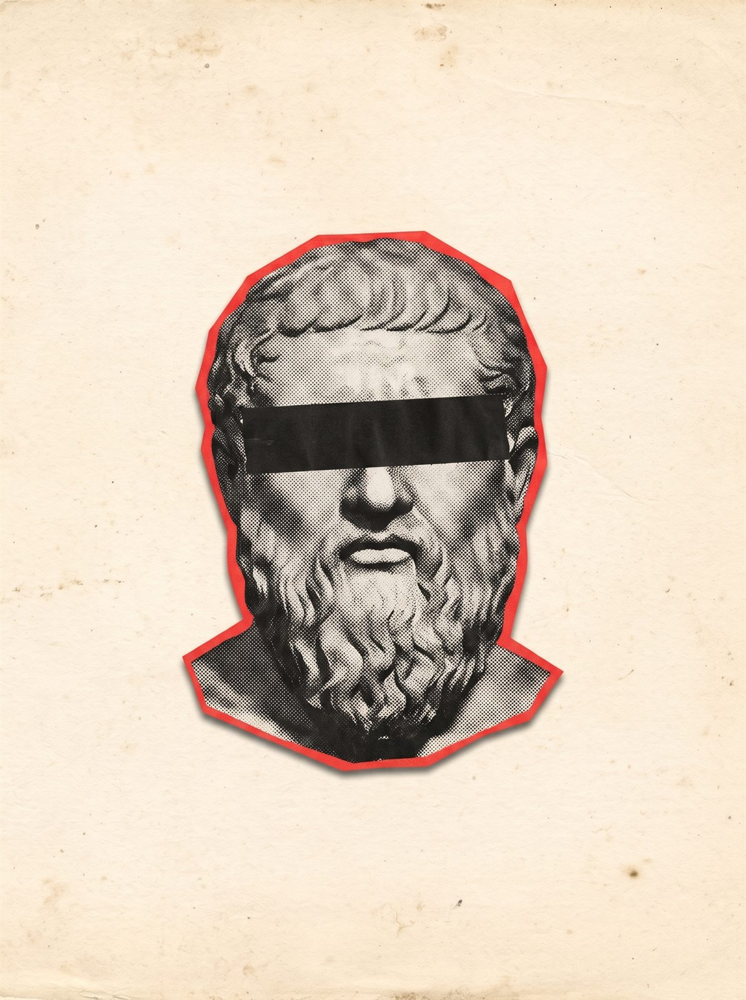

الكلمة καλοῦ (مذكر أو محايد Genitive Singular) لا تتطابق في الجنس مع الاسم ὥρας (مؤنث Genitive Singular). إذا كانت الصفة تصف الاسم مباشرةً في تركيب المضاف إليه المطلق، فالصيغة القياسية المتوقعة للمطابقة هي καλῆς، أو أن καλοῦ استُخدمت كاسم مجرد بمعنى «في أوج ازدهار الجمال».
«عندما وُلد ناركيسوس، تنبأ العراف تيريسياس بأنه سيعيش زمنًا طويلاً، إذا لم يعرف نفسه. وعندما بلغ ناركيسوس سبعة عشر عامًا، وكان في أوج شبابه وجماله، كان يهمل كثيرًا من عشاقه. ثم حدث أنه عندما وصل إلى نبع وهو عطشان، وقع في حب صورته الخاصة، ومات في المكان نفسه حزنًا وعجزًا عن إشباع رغبته.»
يُنسب كتاب Bibliotheca (المكتبة) تقليديًا إلى «أبولودور»، لكن الدراسات الحديثة تستخدم تسمية «أبولودور الزائف» (Pseudo-Apollodorus)؛ لأن هوية المؤلف الحقيقية غير معروفة على وجه اليقين. ويُرجح أنه عاش في القرن الأول أو الثاني الميلادي خلال العصر الإمبراطوري الروماني.
يُعد كتاب Bibliotheca من أهم المؤلفات الأسطورية التي وصلت إلينا من العصور القديمة؛ إذ جمع عددًا كبيرًا من الأساطير اليونانية، ونظمها في صورة سردية تعتمد على الأنساب وتسلسل الأحداث.
تكمن أهميته الأدبية في حفاظه على روايات أسطورية كثيرة، أصبح بعضها مصدرًا أساسيًا للباحثين في دراسة الميثولوجيا اليونانية.

تعود البيئة الثقافية لرواية ناركيسوس إلى الحضارة اليونانية القديمة، حيث احتلت الأساطير مكانة مهمة في تفسير الظواهر الطبيعية والإنسانية والتعبير عن القيم والمخاوف. كما آمنت هذه البيئة ارتباطًا وثيقًا بالقضاء والقدر وبدور العرافين (مثل العراف تيريسياس) في استشراف المستقبل.
ظهرت الصياغة الأدبية الأشهر للقصة في العصر الروماني مع ازدهار الأدب اللاتيني، وخاصة في أعمال الشاعر أوفيد (Ovid). تميزت هذه الفترة بإعادة تقديم الأساطير اليونانية مع التركيز على المشاعر الإنسانية مثل: الحب، الغرور، الرفض، والمعاناة لتصوير العلاقة بين الجمال والحب والذات.
تعكس الثقافة الإغريقية من خلال هذا النص مفاهيم مركزية مثل «معرفة الذات» (Γνῶθι σεαυτόν)؛ حيث كانت الثقافة اليونانية تعتبر جهل الإنسان بحقيقة نفسه مصدرًا للهلاك والتراجيديا.
بطل الأسطورة • شخصية أساسية
العراف الأعمى • شخصية أساسية
المحبون المرفوضون • شخصيات أخرى
إلهة الانتقام • شخصيات أخرى
مقال «مقدمة في النرجسية»
حب الصورة المثالية المتضخمة
الصدى الضحية وانعدام التعاطف
الخلفية الدينية والفلسفية
النبوءة المبطنة بشرط معرفة الذات
التمرد والغرور الشبابي المستمر
وسيلة طبيعية لإرواء العطش (διψῶντα)
الهلاك الناتج عن الانغماس في الأنا
تلخيص التراجيديا البشرية الكاملة
أدخل رمز المقدم (PIN) لتتمكن من تبديل الأسئلة على هواتف القاعة وإغلاق أو تصفير التصويت.